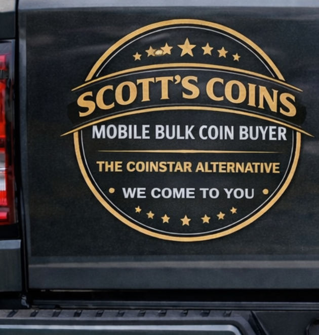

LOCAL SERVICE. REAL CASH.
Your change.
All your cash.
Old jars, full buckets, years of saved change?
Book a home visit or a convenient meetup. Scott counts your coins right in front of you.
Set up an appointment
Hot Springs · Benton · Little Rock, Arkansas
Charity donation jars, community coin collections or accumulated business change? Turn collected change into cash at full face value, with no counting fee.

FROM LOOSE CHANGE TO CASH
Simple from the first text.
From a household change jar to a business or community collection, no sorting or rolling needed. Counted in front of you. Paid in cash.
- 01
Tell Scott what you have.
Tell Scott about your jars, buckets or saved change. Text your city, an approximate amount or weight, and a day and time that works for you.
- 02
Choose a place to meet.
Arrange a home visit, public meetup, or another agreed-upon location you’re comfortable with.
- 03
Count it. Cash it.
Scott counts your coins in front of you and pays their full face value in cash. $100 in change means $100 for you.
CENTRAL ARKANSAS, ON THE MOVE
A coin service that
comes to you.
Book a home visit or a convenient meetup in Hot Springs, Benton or Little Rock. Scott comes to your agreed location and counts the coins in your presence.
Contact Scott for current availability and meetup details.
Hot Springs
Benton
Little Rock
Mobile service · By arrangement
WHERE TO FIND SCOTT
Occasional local stops.
Prefer a scheduled stop? Watch here for confirmed locations. Appointments and home visits are available by arrangement.
Contact Scott for the next confirmed location and time.
Ask about the next stop ↗A FEW GOOD QUESTIONS
Before we meet.
Is there a counting fee?
No. $100 in change equals $100 in cash. Scott pays the full face value of the coins counted.
Do I have to bring my coins somewhere?
You can arrange a home visit or meet at a public location. Text Scott your city and approximate amount to work out the details.
Do I need to sort or roll my coins?
No sorting or rolling needed. Bring your loose change; Scott counts it and buys it at full face value.
Can I ask about individual coins?
Ask Scott about individual coins. Contact him to discuss what you have and how he may be able to help.
What should I include in my text?
Your city, preferred day and time, approximate pounds or amount of coins, and whether you prefer a home visit or public meetup. Scott will reply to confirm.
READY WHEN YOU ARE
Put your change
back to work.
Text is the easiest way to start.
Scott will reply to confirm your time and location.